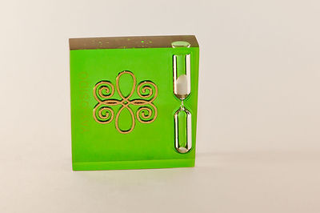
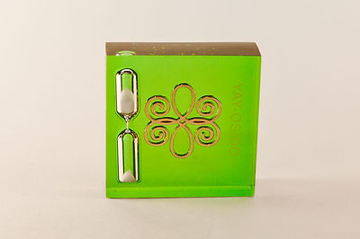
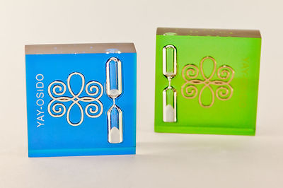

Гармонизатор “Песочные Часы “ЯЙ-ОСИДО”
Инструкция
В основе разработки использован
Символ «ЯЙ-ОСИДО — Зеркало Жизни»
Патент № 58256 от 11.04.2011
 |
 |
|---|---|
|  |  |
|  | |
Научная основа разработки – рунные технологии В.П. Гоч и метод Психографии Я.С.Ибадова, результаты проведенных научных исследований, полученные современными инструментальными электрофизиологическими методами (ЭКГ, ЭЭГ, ЭМГ, Фолля, ГРВ), с помощью системы «AURA-Vibraimag», диагностического комплекса «Омега-2М» и методом информа-ционного контроля (торсионный фазовый портрет).
Символ «Яй-Осидо – Зеркало Жизни» оказывает преобразующее и гармонизирующее воздействие на биологические объекты и окружающее пространство. Результатом воздействия гармонизатора на объект является восстановление информационных составляющих поля объекта во времени. Гармонизатор работает на энергоинформационном уровне через поля кручения, преобразуя негативную энергоинформацию, записанную на уровне ДНК. Он работает как зеркало для отражения от негативных энергоинформационных воздействий и как щит создает им барьер, оберегая человека. Восстанавливая энергоинформационную гармонию, «Зеркало Жизни» помогает человеку подниматься на следующие квантовые уровни Бытия. В основе работы гармонизатора происходит коррекция метаморфоз времени систем на многомерном уровне. Гармонизатор синхронизирует внутреннее время человека со Вселенским Временем. Он помогает человеку гармонично войти в Новое Время.
Известно, что в песочных часах время движется сверху вниз. Временной срез этих часов зависит как от количества песка внутри них, так и от скорости его просачивания из одной половины колбы в другую. Скорость движения песка сверху вниз можно уподобить скорости расходования человеком своей жизненной энергии. Ввиду того, что колба часов замкнута, количество песка невозможно увеличить или уменьшить. У каждого человека также есть своё внутреннее время и свои внутренние часы. Как существуют отстающие или спешащие часы, так существуют и люди, которые отстают или хотят опередить временную гармонию Вселенной. Однако приведением скорости внутренних часов в гармоническое соответствие с законами Вселенского Времени мы можем предотвратить процесс преждевременного старения. Одним из способов, позволяющим синхронизировать внутреннее время человека с мировым Временем является Метод Психографии Я.С.Ибадова и построение Фазовых портретов живых систем».
На основании проведенных научных исследований разработан гармонизатор для коррекции психоэмоционального состояния биологического объекта и окружающего пространства «Песочные часы «Яй-Осидо».
Принцип работы гармонизатора
Устройство работает посредством поляризации вакуума эффектом формы. С помощью гармонизатора “Песочные часы “Яй-Осидо” происходит коррекция информационно-голографического образа и биоэнергетической матрицы человека в режиме непосредственного контакта, а также в работе с индивидуальным Фазовым портретом и фотографией.
Позитивный эффект работы гармонизатора «Песочные часы – Яй-Осидо» усиливается благодаря организации многомерного движения энерго-информационных и временных потоков.
Очевидно, что направление движения песка в песочных часах соответствует гравитации и осуществляется в янском направлении (вертикально – сверху вниз). Также расположенный в центре гармонизатора символ “Зеркала Жизни” как отображение пространства, способен не только очищать информацию, улучшая качество внутреннего времени, но и обновлять ее.
Физическое движение песка переводится на квантовый уровень более тонких и высоких вибраций, а именно – души и Духа. Такая работа предполагает готовность человеческого сознания, которое само по себе есть Зеркало – Зеркало Бытия. «Свойство отображения в том, что совершенство прибавляется, а несовершенство убирается. Главное свойство Зеркала — производить работу по прибавлению совершенства».
Результатом действия гармонизатора “Песочные часы “Яй-Осидо”на объект является восстановление информационных составляющих поля объекта во Времени. Подобие формы тела человека и песочных часов дает нам возможность с помощью этого гармонизатора поддерживать движение энергии в различных органах и системах человеческого организма, регулировать движение энергии Времени в энергетических каналах, корректировать информации, записанные во времени живой системы, синхронизировать внутреннее время человека с ритмами Единого Времени.
А. Синхронизировать внутреннее время человека с Мировым Временем.
Б. Предотвратить процесс преждевременного старения организма и включить процессы омоложения на клеточном уровне.
В. Улучшить метаморфозы живых систем (урегулировать биоритмы, гармонизировать функциональное состояние систем и органов, улучшить обмен веществ в организме).
Г. На физическом уровне улучшить движение биологических жидкостей организма (желчевыводящие пути, черепно-мозговая жидкость, мочевыводящие пути и др.)
Д. На энергоинформационном плане улучшить состояние на уровне пространственно-временного континиума (песочные часы гармонизируют внутреннее время человека, а символ «Зеркало Жизни» создает гармонизацию в пространстве).
Работа гармонизатора происходит на нескольких уровнях:
1. На уровне физического тела ( непосредственный контакт).
2. На уровне эфирного тела (на расстоянии 3-5 см от физического тела).
3. Дистанционная работа на энергоинформационном уровне (через фотографию, Фазовый портрет).
В результате с помощью гармонизатора песочные часы «Яй-Осидо» для каждого человека появляется возможность улучшить процессы самоочищение и самовосстановления организма.
Учитывая, что почти все жидкости организма текут в направлении сверху вниз (вертикально), гармонизатор прикладывается к тем участкам, где требуется улучшение движения биологических жидкостей:
желчный пузырь – правое подреберье;
почки – на пояснице;
черепно-мозговая жидкость – на уровне первого шейного позвонка.
Гармонизатор имеет 2 вида: инь-форма зеленого цвета, ян-форма – синего.
Мужчины используют синий гармонизатор, женщины – зеленый.
Более эффективно одновременное использование двух гармонизаторов как для мужчин, так и для женщин. При этом появляется возможность провести коррекционную работу параллельно с иньской и янской энергетикой.
Например, при наличии 2-х гармонизаторов инь и ян при работе с почками зеленый гармонизатор прикладывается к левой почке, а синий – к правой. Также при работе с мочевым пузырем: у женщин спереди прикладывается зеленый гармонизатор, сзади – синий. У мужчин наоборот.
Работа с поджелудочной железой производится зеленым гармонизатором в лежачем положении на правом боку. А с желчным пузырем синим гармонизатором в лежачем положении на левом боку.
Время экспозиции для печени, поджелудочной железы, почек 3-5 мин, для мочевого пузыря – 7-10 мин.
Направление поворачивания гармонизатора тоже имеет существенное значение.
Направление поворота гармонизатора соответствует естественному движению биологических жидкостей из органов и осуществляется в направлении вращения кнутри относительно центральной оси тела (как на передней поверхности тела, так и на задней при работе с почками).
На уровне эфирного тела предлагается расположить гармонизатор в височной области на расстоянии 3-5 см от головы, зеленый с левой стороны, а синий – справа. Время экспозиции 5-7 мин. Через каждую минуту гармонизатор необходимо поворачивать попеременно спереди назад, затем обратно.
При дистанционной работе с индивидуальной фотографией и Фазовым портретом рекомендуется одновременное использование обоих гармонизаторов. Синий гармонизатор располагается справа, а зеленый – слева напротив друг друга. Каждую минуту гармонизатор необходимо поворачивать от себя вперед. Время экспозиции 10-15 мин.
- восстанавливать и нормализовывать функции нейронов коры головного мозга, нервно-мышечных элементов;
- нормализовывать внутричерепное давление;
- улучшать обменные процессы в организме и повысить иммунитет;
- восстанавливать работу сердечно-сосудистой системы;
- улучшать микроциркуляцию крови конечностей, восстанавливать нарушенный лимфатический отток в органах и системах;
- облегчать процесс реабилитации при хронических состояниях;
- снимать усталость, стресс, активизировать процессы мышления, памяти и омоложения;
- улучшать основные функции крови: дыхательную, гомеостатическую, защитную;
- улучшать движение биологических жидкостей организма (из желчевыводящих путей, почек, черепно-мозговой жидкости и др.);
- повышать эффективность процесса лечения ДЦП;
- налаживать работу энергетических центров (чакр) человека;
- структурировать воду, улучшая ее физическо-химические и биологические свойства;
- улучшать информационные характеристики различных объектов и веществ.
Систематическое применение гармонизатора обеспечивает повышение иммунитета и защитных сил организма, способствует улучшению мышления, памяти, зрения, слуха и процессов омоложения организма на клеточном уровне.
Европейское признание
Изобретение было удостоено награды "Европейское качество" и лицензией
Европейской Бизнес Ассамблеи из 28 стран Европы, Азии, Африки и
Латинской Америки.
Изобретение было удостоено награды "Европейское качество" и лицензией
Европейской Бизнес Ассамблеи из 28 стран Европы, Азии, Африки и
Латинской Америки.
 |
 |

Данный приз и лицензия соответствуют уровню брендов
Европы на изобретения
.
Европы на изобретения